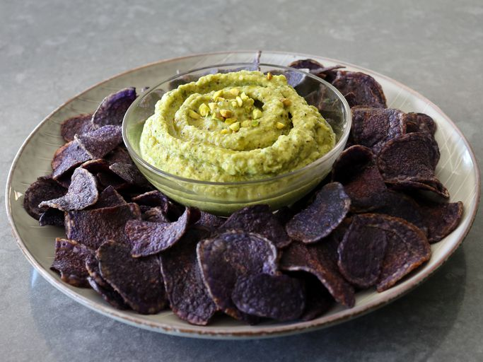

Green No-Bean Hummus

Description
This very exciting green hummus alternative is made with zucchini
that is salted and charred to bring out the flavor.
It’s easy to digest, keto-friendly, and delicious!
Ingredients
- 1.2kg zucchini
- 2 tablespoons cooking salt
- 4 tablespoons olive oil, divided
- 3 cloves crushed garlic
- 3 tablespoons tahini
- ½ lemon, juiced, plus more to taste
- 6 basil leaves, sliced
- ¼ teaspoon ground black pepper
- ¼ teaspoon cumin
- 1 pinch cayenne
Steps
- Trim ends from zucchini and cut into quarters. Trim out seeds
if zucchini are really big. Cut into 1 ½-inch pieces and add
to a bowl. Toss thoroughly with 2 tablespoons salt and let sit
for 15 to 20 minutes, tossing halfway through.
- Transfer zucchini to a strainer and rinse off salt very
thoroughly. Let drain well before transferring to a bowl.
- Set an oven rack about 6 inches from the heat source and
preheat the oven's grill. Line a baking sheet with foil.
- Toss zucchini with 2 tablespoons olive oil, toss, and spread out
in a single layer on the prepared baking sheet, making sure
zucchini pieces touch each other.
- Grill on high heat until zucchini start to brown and are lightly
charred, 5 to 6 minutes. Remove pan and turn zucchini pieces over.
Return and grill until zucchini are tender but not mushy, and
nicely browned, 5 to 6 minutes longer.
- Transfer zucchini to a strainer and let drain until cooled to
room temperature, about 45 minutes.
- Combine drained zucchini, remaining 2 tablespoons olive oil,
tahini, garlic, lemon juice, basil, ½ teaspoon salt, cumin, black
pepper, and cayenne in a blender. Blend until smooth, and taste
for seasoning. You can also use an immersion blender.
- For best flavour, cover and chill the hummus before serving.
Home